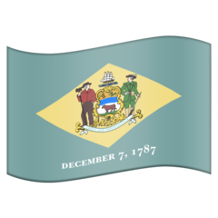
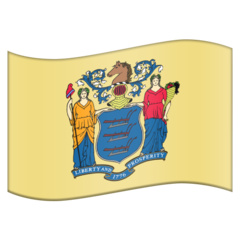
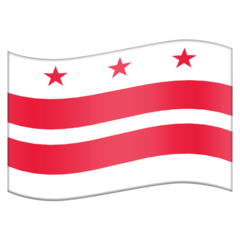

🚠 Johnstown Inclined Plane
🏙️ Pittsburgh
🚠 Penn Incline
🚉 Pittsburgh Union Station
🗼 U.S. Steel Tower
🌊 Monongahela
🌉 Panhandle Bridge
🌉 Liberty Bridge
🚇 Liberty Tunnel
🚇 Mount Washington Transit Tunnel
🚠 Castle Shannon Incline
🦋 South Hills Junction ½ grand union
🎈 South Hills Junction loops
🚇 Mount Lebanon Rail Tunnel
🏭 South Hills Village
🍏 South Hills Village
🎈 Drake Loop
🏚️ Montour Trail
🚇 North Shore Connector Tunnel
🚋 Pittsburgh Light Rail
🌊 Ohio
🌊 Allegheny
🌉 Fort Duquesne Bridge
🏰 Fort Pitt
🏰 Fort Duquesne
🌉 Fort Pitt Bridge
🚇 Fort Pitt Tunnel
🚇 Wabash Tunnel
🚠 Duquesne Incline
🚇 Armstrong Tunnel
👨🎓 University of Pittsburgh
🗼 Cathedral of Learning
⛪️ Saint Paul Cathedral
🦋 5th Ave / Craig St
👨🎓 Carnegie Mellon
🍏 Shadyside
🪦 Allegheny Cemetery
🥟 Apteka
🏊♂️ Oliver Bath House
🚠 Knoxville Incline
🚠 Mount Oliver Incline
🏚️ Brown Line
🚠 Castle Shannon Incline No. 2
🏚 Pittsburgh & Lake Erie Railroad Station
🚠 Monongahela Incline
🌉 Smithfield Street Bridge
🏚️ Wabash Pittsburgh Terminal
🌉 The Three Sisters
🌉 West End Bridge
🏚️ Panhandle Railroad
🚇 Cork Run Tunnel
🛫 Pittsburgh Airport
🚝 Pittsburgh Airport People Mover
🧭 Riverton Country Club, 40°N 75°W
🍏 Cherry Hill


 Swedesboro
SwedesboroPennsville, westernmost point of New Jersey
🏰 New Castle, Delaware
🧭 New Castle Court House, center of Twelve-Mile Circle
🍏 Christiana Mall
 Delaware Wedge
Delaware Wedge🚇 Metro Silver Line

Andrew Ellicott Park, westernmost point of Washington, DCFort Reno Park, highest point in Washington, DC
🏰 Fort Reno
🏰 Fort de Russy
🏰 Fort Stevens
🏰 Fort Totten
🏚 Washington & Old Dominion
🏚 Capital Crescent Trail
🏰 Fort Bayard
East-West Highway, northernmost point of Washington, DC
🗼 George Washington Masonic Memorial
Jones Point Light, southernmost point of Washington, DC
 Jones Point Light
Jones Point Light🌉 Woodrow Wilson Bridge
Eastern & Southern Aves, easternmost point of Washington, DC
🏰 Fort Slocum
🏰 Fort Bunker Hill
DC Boundary Stones (map)
Silver Spring, 39°N 77°W👯♂️ Mount Pleasant, MD
👯♂️ New Windsor, MD
👯♂️ Westminster, MD
👯♂️ Manchester, MD
👯♂️ Mount Pleasant, PA
👯♂️ Hanover, PA
👯♂️ New Oxford, PA
👯♂️ East Berlin, PA
🧭 East Berlin, 40°N 77°W
👯♂️ Dover, PA
👯♂️ Manchester, PA
👯♂️ Columbia, PA
🍏 Park City
👯♂️ Strasburg, PA
🧭 Gap, Lancaster, 40°N 76°W
👯♂️ Gap, PA
😄 Jodie, Pottstown
👯♂️ Dublin, PA
🍏 Bridgewater
🏰 Alnwick Hall, Morristown
🍏 Willowbrook
🏰 Lambert Castle, Patterson
🏰 Iviswold Castle, Rutherford
🍏 American Dream
♨️ King Spa
👯♂️ Saint Albans, NY
Palisades, easternmost point of New Jersey
👯♂️ Spring Valley, NY
👯♂️ Oxford, NY
👯♂️ Chester, NY
🌊 Ramapo River
👯♂️ Florida, NY
👯♂️ Warwick, NY
👯♂️ Newport, NY
 Port Jervis
Port JervisMontague, northernmost point of New Jersey
Matamoras, easternmost point of Pennsylvania🌊 Neversink River
High Point, highest point in New Jersey
👯♂️ Hamburg, NJ
👯♂️ Stockholm, NJ
👯♂️ Mountain View, NJ